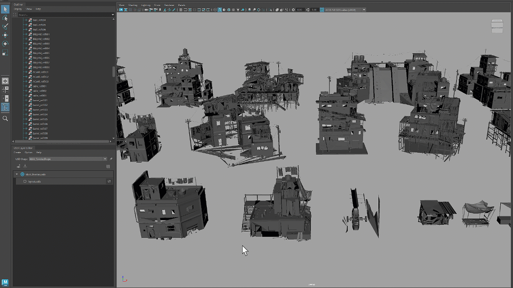

Bulk editing: load/unload multiple prims
In USD for Maya 0.26, the bulk action context menu lets you make multiple prims visible, activate them or mark them as instanceable. With the 0.27 update, you can also load or unload multiple prims simultaneously.

Universal Manipulator on USD objects
You can now use the Universal Manipulator to move, rotate and scale prims. To access the Universal Manipulator, go to Modify > Transformation Tools > Universal Manipulator or use the shortcut Ctrl+T. This functionality is only available in Maya 2025.
Improved readability of attribute names
We have improved the readability of the attribute names in the Channel Box.
Wait cursor for payload loading
A wait cursor now appears in cases where payload loading may take longer than usual.
Support for relative paths in anonymous layers
The Cache to USD functionality now supports the use of relative paths for references in anonymous layers, making it easier to work with files and directories in different locations.
Setting the default prim for file export
When exporting a USD file, you now have the option to specify the default prim.
Reload layers
You can now reload a USD layer from the context menu to see any updates made to that layer outside the current Maya session.
Hydra for Maya v0.6.0
USD for Maya 0.27 contains Hydra for Maya v0.6.0, which introduces selection highlighting for USD data, a new API for customizing data in the viewport, and the Hydra Scene Browser as a debugging tool.
General stability improvements
Hydra for Maya is a Technology Preview and has similar capabilities to the original MtoH. It is designed to function as a render delegate in the Viewport. To load Hyfra for Maya, see load and manage plug-ins. For more information, visit the official Autodesk Maya Hydra GitHub community.
| Build |
|---|
| [GitHub #3573] Refactor duplication code |
| [GitHub #3562] Fix broken CXX ABI detection |
| [GitHub #3558] Add Unit test for parent to selection |
| [GitHub #3545] Updated workflow for running preflight |
| [GitHub #3540] Add explicit boost/optional include |
| [GitHub #3532] Restore OpenEXR test |
| [GitHub #3522] Deprecate boost optional for sdf copy spec |
| [GitHub #3521] Update usage of the Hydra API |
| [GitHub #3520] Add versioning comments |
| [GitHub #3514] MayaUSD : Bump UFE version to v5.0 |
| [GitHub #3503] Allow specializing the topo neutral graph generator |
| [GitHub #3479] Run more of the Pixar plugin tests |
| [GitHub #3459] Build USD v23.11 with Python 3.11/OSD 3.6 and update ecg-maya-usd |
| [GitHub #3455] Add missing include |
| [GitHub #3447] Support for USD v23.11 |
| Translation Framework |
|---|
| [GitHub #3572] Set the default prim on export |
| [GitHub #3516] Export MaterialX path for extra nodes |
| [GitHub #3489] Fix copying the proxy shape node |
| [GitHub #3488] Provide access to the Export Selected options |
| [GitHub #3482] Register USD data in the Maya File Path Editor |
| [GitHub #3474] Fix errors when trying to cache a rig with merge transforms ON and namespaces OFF |
| [GitHub #3385] Determine how to read UsdLux prims with an envvar |
| Workflow |
|---|
| [GitHub #3385] Determine how to read UsdLux prims with an envvar |
| [GitHub #3574] Add unit test for circular relationships |
| [GitHub #3568] Recognize NodeGraph EnumString attributes |
| [GitHub #3566] Fix copying node with Arnold material |
| [GitHub #3565] Layer Editor's "Revert to File" menu item is renamed to "Reload" |
| [GitHub #3564] Allow creating custom types at NodeGraph boundaries |
| [GitHub #3557] Fix prettify name routine when all caps name has a number at the end |
| [GitHub #3550] Fixes a bug with UsdAttributeEnumString that have token values |
| [GitHub #3537] Duplicate-to-USD support relationship targets |
| [GitHub #3533] Don't show set-as-default prim when already default |
| [GitHub #3531] Use uimin if uisoftmin is missing |
| [GitHub #3531] Use uimin if uisoftmin is missing |
| [GitHub #3526] Allow parenting under a stronger layer |
| [GitHub #3519] Fixes an out of range crash that only occurs in Debug mode |
| [GitHub #3515] Use proper API to set color space in USD |
| [GitHub #3508] Fix edit target after layer clear |
| [GitHub #3506] From LookdevX bring over UINodeGraphNode new virtual functions |
| [GitHub #3504] Allow saving locked layers |
| [GitHub #3449] Fix crash when duplicating a proxy shape |
| [GitHub #3498] Fix finding strongest layer |
| [GitHub #3495] Support relative cache to USD in anon layers |
| [GitHub #3494] Add a third party naming convention for shader outliner icons |
| [GitHub #3484] Send subtree invalidate on undo mark instanceable |
| [GitHub #3463] Apply restrictions for activation and instanceable |
| [GitHub #3443] Fixes Edit As Maya Options Convert Instances Not Retaining From Session to Session |
| Render |
|---|
| [GitHub #3570] Fix crash in topo handler |
| [GitHub #3563] Wait cursor during long VP2 updates |
| [GitHub #3559] Fix incorrect tangent fixup |
| [GitHub #3552] Fix the transform nodes crash |
| [GitHub #3546] Do not bail out after a failed validate call |
| [GitHub #3534] Fix instanceable prims not rendered in Hydra |
| [GitHub #3509] Fix multiple NodeGraph connections |
| [GitHub #3507] Update OCIO code to handle new Hydra colorspace info |
| [GitHub #3493] Use new Hd MtlxStdLibraries API |
| [GitHub #3481] Fix legacy CM nodes affected by MaterialX 1.38.8 |
| [GitHub #3462] Get watch list of traversed nodes |
| [GitHub #3445] Implemented MaterialX Topo Handler |
| Miscellaneous |
|---|
| [GitHub #3576] Fix slow scene load performance |
| [GitHub #3561] Resource Identifier warning on first launch of MayaUSD |
| [GitHub #3553] USD Prefs: "Use Display Color" preferences are maintained when user cancels change |
| [GitHub #3549] Make New layers collapsed |
| [GitHub #3544] Expand and collapse all layer items |
| [GitHub #3530] Fixes USDZ extension not being accepted in prim hierarchy view |
| [GitHub #3523] Remove the load payloads proxy shape attribute |
| [GitHub #3518] Fix reloading scene with layers saved in the Maya scene |
| [GitHub #3517] Fix Linux icon paths |
| [GitHub #3513] Use wait cursor for payload commands |
| [GitHub #3505] Integrated UsdSceneItemMetaData Into UsdSceneItem |
| [GitHub #3499] Support custom display name for USD attributes |
| [GitHub #3492] Pipe UsdStage data and Complexity to proxy nodes |
| [EMSUSD-918] Warning displays when loading the Maya USD plugin |
| [EMSUSD-923] Renaming a node in the channel box triggers an error message in Maya |
| [EMSUSD-952] Resource identifier warnings display when loading the Maya USD plugin |
| [EMSUSD-997] Show Arry Attribute option does not display when Maya USD plugin is autoloaded |